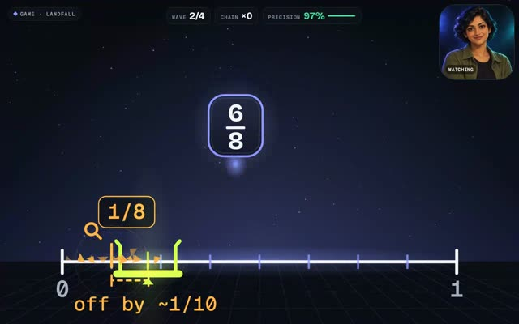
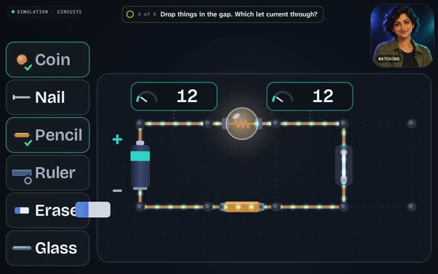
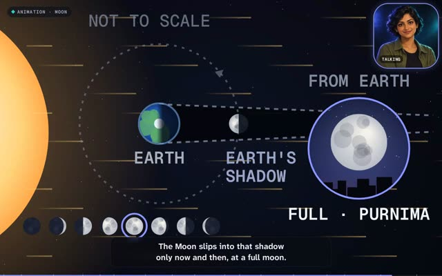

Taxila · Studio V2 · exemplars
The bar for games and animation
Three pieces built as archetype engines driven by a small generated spec. Each fits the 16:10 stage, holds the teacher's safe zones, and plays without a network. Open one, then try ?motion=reduce or press S to see the safe zones.

Game · maths · class 5-6
Landfall
Steer the dock to where a fraction lives before its pod lands. Four waves: quarters, eighths, "same spot?" equivalents, and past one.

Simulation · science · class 7
Circuit Lab
Build loops on a bench solved by exact nodal analysis. Meters, a switch after the bulb, conductors and insulators, cells in series.

Animation · science · class 4 and 7
Why the Moon has phases
A narrated explainer: dusk sky, pull-out to space, linked "from Earth" view, Earth's shadow ruled out, then drag the Moon yourself.